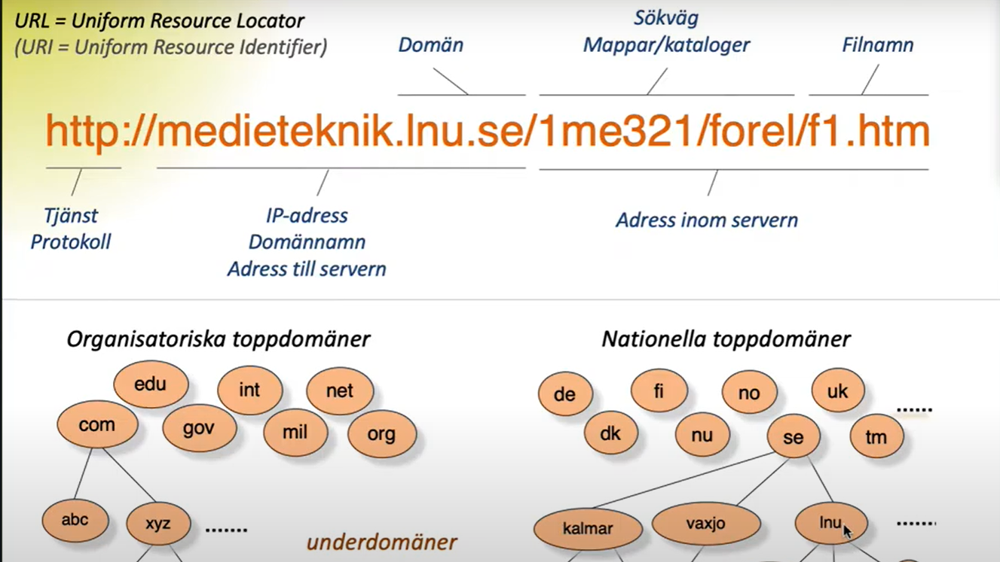

Frågor om datakommunikation och webbadresser
1. Ge en kort beskrivning av var och en av protokollen:
- HTTP
- TCP
- IP
Svar:
- HTTP (HyperText Transfer Protocol)
- Protokollet som används för att göra kontakten mellan användarens webbläsare och webbservern genom att skicka begäran till server och sen få svaret ifrån server.
- TCP (Transmission Control Protocol)
- Protokollet används för att dela upp information som ska skickas i flera informationspaket och numrera dem(eftersom informationspaket kan komma fram till mottagaren genom olika routrar och inte i samma ordning som de skickades av avsändare). Sedan tar det emot informationspaketet på mottagrens sida och sätter ihop dem i rätt ordning så de kan används av mottagaren.
- IP (Internet Protocol)
- Protokollet som används för identiferar enheter (datorer, mobiltelefoner, routrar,...etc) som är anslutna till nätetm, där
2. Beskriv kort vilka delar följande url består av: http://medieteknik.lnu.se/1me321/uppg/u1.html#fragor
Svar:

- http: protokollen som används
- medieteknik.lnu.se: domännamn som används som forkortning för IP adress
- se: är den nationella toppdomänen för Sverige
- lnu: är underdomänen som tillhör Linneuniversitet
- 1me321, uppg: är mappar i server
- u1.html: är filen som används
- #fragor: den refererar till det stycket ”frågor” i webbsida